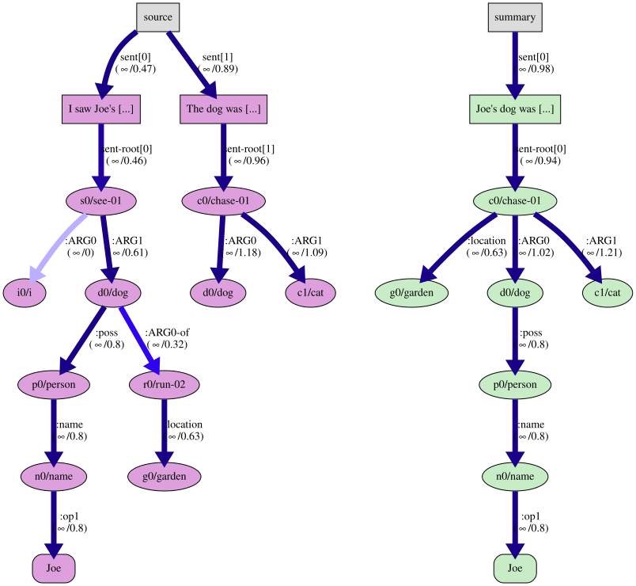
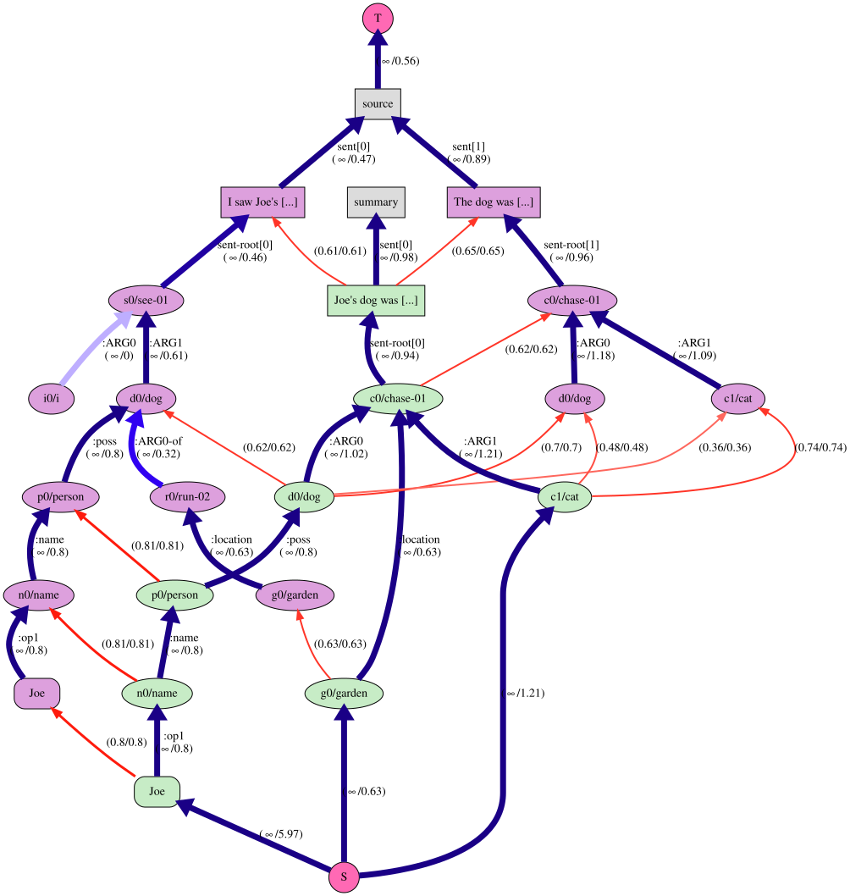
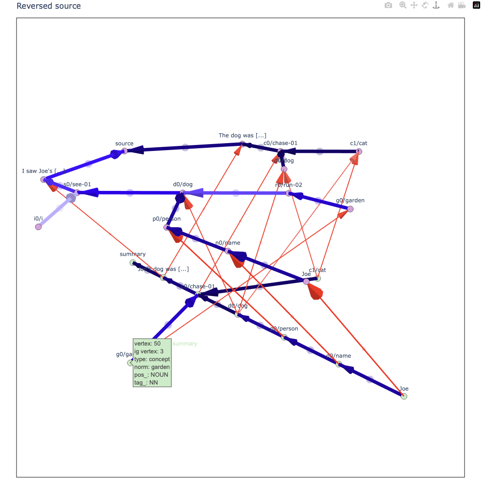

CALAMR: Component ALignment for Abstract Meaning Representation#


This repository contains code for the paper CALAMR: Component ALignment for Abstract Meaning Representation and aligns the components of a bipartite source and summary AMR graph. To reproduce the results of the paper, see the paper repository.
The results are useful as a semantic graph similarity score (like SMATCH) or to find the summarized portion (as AMR nodes, edges and subgraphs) of a document or the portion of the source that represents the summary. If you use this library or the PropBank API/curated database, please cite our paper.
Features:
Align source/summary AMR graphs.
Scores for extent to which AMRs are summarized or represented in their source text.
Rendering of the alignments.
Support for four AMR corpora.
Table of Contents#
Documentation#
The recommended reading order for this project:
The abstract and introduction of the paper CALAMR: Component ALignment for Abstract Meaning Representation
Obtaining#
The library can be installed with pip from the pypi repository:
pip3 install zensols.calamr
Corpora#
This repository contains code to support the following corpora with source/summary AMR for alignment:
LDC2020T02 (AMR Release 3.0) Proxy Corpus
ISI Little Prince
ISI Bio AMR
A micro corpus (toy corpus) used in the paper examples and usage.
Usage#
The command-line tool and API does not depend on the repository. However, it has a template configuration file that both the CLI and the API use. The examples also use data in the repository. Do the following to get started:
Clone this repository and change the working directory to it:
git clone https://github.com/plandes/calamr && cd calamr
Copy the resource file:
cp src/config/dot-calamrrc ~/.calamrrc
Command Line#
The steps below show how to use the command-line tool. First set up the application environment:
Edit the
~/.calamrrcfile to choose the corpus and visualization. Keep thecalamr_corpusset toadhocfor these examples. (Note that you can also set the theCALAMRRCenvironment variable to a file in a different location if you prefer.)Create the micro corpus:
calamr mkadhoc --corpusfile corpus/micro/source.json
Print the document keys of the corpus:
calamr keys
Aligning Corpus Documents#
AMR corpora that distinguish between source and summary documents are needed so the API knows what data to align. The following examples utilize preexisting corpora (including the last section’s micro corpus):
Generate the Liu et al. graph for the micro corpus in directory
example:calamr aligncorp liu-example -f txt -d example
Force the Little Prince AMR corpus download and confirm success with the single document key
1943:calamr keys --override=calamr_corpus.name=little-prince
Use the default AMR parser to extract sentence text from the Little Prince AMR corpus using the SPRING (Bevilacqua et al. 2021) parser:
calamr penman -d lp.txt --limit 5 \ --override amr_default.parse_model=spring \ ~/.cache/calamr/corpus/amr-rel/amr-bank-struct-v3.0.txt
Score the parsed sentences using CALAMR, SMATCH and WLK:
calamr score --parsed lp.txt \ --methods calamr,smatch,wlk \ ~/.cache/calamr/corpus/amr-rel/amr-bank-struct-v3.0.txt
Ad hoc Corpora#
The micro corpus can be edited and rebuilt to add your own data to be aligned. However, there’s an easier way to align ad hoc documents.
Align a summarized document not included in any corpus. First create the annotated documents as files
short-story.json.[ { "id": "intro", "body": "The Dow Jones Industrial Average and other major indexes pared losses.", "summary": "Dow Jones and other major indexes reduced losses." }, { "id": "dow-stats", "body": "The Dow ended 0.5% lower on Friday while the S&P 500 fell 0.7%. Among the S&P sectors, energy and utilities gained while technology and communication services lagged.", "summary": "Dow sank 0.5%, S&P 500 lost 0.7% and energy, utilities up, tech, comms came down." } ]
Now align the documents using the
XFM Bart BaseAMR parser, rendering with the maximum number of steps (-r 10), and save results toexample:calamr align short-story.json --override amr_default.parse_model=xfm_bart_base -r 10 -d example -f txt
The -r option controls how many intermediate graphs generated to show the
iteration of the algorithm over all the steps (see the paper for details).
AMR Release 3.0 Corpus (LDC2020T02)#
If you are using the AMR 3.0 corpus, there is a preprocessing step that needs executing before it can be used.
The Proxy Report corpus from the AMR 3.0 does not have both the alignments
(text-to-graph alignments) and snt-type (indicates if a sentence is part of
the source or the summary) metadata. By default, this API expects both. To
merge them into one dataset do the following:
Obtain or purchase the corpus.
Move the file where the software can find it:
mkdir ~/.cache/calamr/download cp /path/to/amr_annotation_3.0_LDC2020T02.tgz ~/.cache/calamr/download
Merge the alignments and sentence descriptors:
./src/bin/merge-proxy-anons.py
Confirm the merge was successful by printing the document keys and align a report:
calamr keys --override=calamr_corpus.name=proxy-report calamr aligncorp 20041010_0024 -f txt -d example \ --override calamr_corpus.name=proxy-report
API#
To use the package programmatically:
Get the resource bundle:
from pathlib import Path from zensols.amr import AmrFeatureDocument from zensols.calamr import DocumentGraph, Resource, ApplicationFactory # get the resource bundle res: Resource = ApplicationFactory.get_resource()
Get the Liu et al. AMR feature document example and print it.
doc: AmrFeatureDocument = res.get_corpus_document('liu-example') doc.write()
output:
[T]: Joe's dog was chasing a cat in the garden. I saw Joe's dog, which was running in the garden. The dog was chasing a cat. sentences: [N]: Joe's dog was chasing a cat in the garden. (c0 / chase-01~e.4 :location (g0 / garden~e.9) :ARG0 (d0 / dog~e.2 :poss (p0 / person :name (n0 / name :op1 "Joe"~e.0))) :ARG1 (c1 / cat~e.6)) . . . amr: summary: Joe's dog was chasing a cat in the garden. sections: no section sentences I saw Joe's dog, which was running in the garden. The dog was chasing a cat.
Align (if not already and cached) and get the flow results of the example:
flow = res.align_corpus_document('liu-example') flow.write()
output:
summary: Joe's dog was chasing a cat in the garden. sections: no section sentences I saw Joe's dog, which was running in the garden. The dog was chasing a cat. statistics: agg: aligned_portion_hmean: 0.8695652173913044 mean_flow: 0.7131309357900468 tot_alignable: 21 tot_aligned: 18 aligned_portion: 0.8571428571428571 reentrancies: 0
Parse the first document from the ad hoc JSON file align it, and give its statistics:
doc: AmrFeatureDocument = next(iter(res.parse_documents(Path('short-story.json')))) graph: DocumentGraph = res.create_graph(doc) flow = res.align(graph) flow.write()
output:
summary: Dow Jones and other major indexes reduced losses. sections: no section sentences The Dow Jones Industrial Average and other major indexes pared losses. statistics: agg: aligned_portion_hmean: 1.0 mean_flow: 0.9269955839429582 tot_alignable: 24 tot_aligned: 24 aligned_portion: 1.0 reentrancies: 0 ...
Render the results of a flow:
flow = res.align_corpus_document('liu-example') flow.render()
Render all graphs of the flow results of the flow to directory
example:flow.render( contexts=flow.get_render_contexts(include_nascent=True), directory=Path('example'), display=False)
Docker#
A stand-alone docker image is also available (see CALAMR Docker image). This docker image provides stand-alone container with all models, configuration and the adhoc micro corpus installed.
Example Graphs#
The Liu et al. example graphs were created from the last step of the API examples, which is equivalent the first step of the command line example.
GraphViz#
To create these graphs, set your ~/.calamrrc configuration to:
[calamr_default]
renderer = graphviz
The Nascent Graph (with flow data)#

The Source Graph#

Plotly#
To create these graphs, set your ~/.calamrrc configuration to:
[calamr_default]
renderer = plotly
See the interactive version.

Attribution#
This project, or reference model code, uses:
Python 3.11
amrlib for AMR parsing.
amr_coref for AMR co-reference
zensols.amr for AMR features and summarization data structures.
Sentence-BERT embeddings
zensols.propbankdb and zensols.deepnlp for PropBank embeddings
zensols.nlparse for natural language features and NLP scoring
Smatch (Cai and Knight. 2013) and WLK (Opitz et. al. 2021) for scoring.
Citation#
If you use this project in your research please use the following BibTeX entry:
@inproceedings{landes-di-eugenio-2024-calamr-component,
title = "{CALAMR}: Component {AL}ignment for {A}bstract {M}eaning {R}epresentation",
author = "Landes, Paul and
Di Eugenio, Barbara",
editor = "Calzolari, Nicoletta and
Kan, Min-Yen and
Hoste, Veronique and
Lenci, Alessandro and
Sakti, Sakriani and
Xue, Nianwen",
booktitle = "Proceedings of the 2024 Joint International Conference on Computational Linguistics, Language Resources and Evaluation (LREC-COLING 2024)",
month = may,
year = "2024",
address = "Torino, Italy",
publisher = "ELRA and ICCL",
url = "https://aclanthology.org/2024.lrec-main.236",
pages = "2622--2637"
}
Changelog#
An extensive changelog is available here.
License#
Copyright (c) 2023 - 2024 Paul Landes